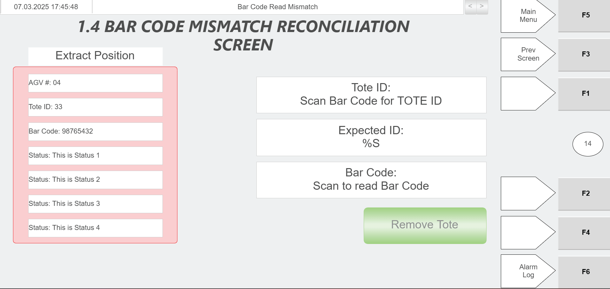
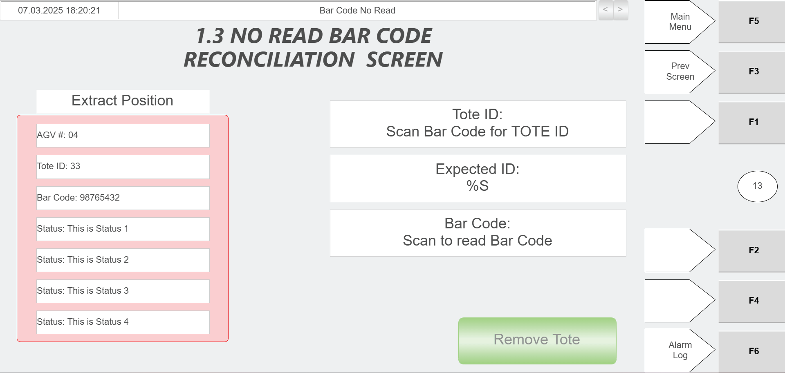

Determine Why A Tote Was Sent To The Hospital Station Using The Green Scanner
Procedure Type
diagnostic
Primary Role
operator
Support Safe
Yes
Validation Status
needs_sme_review
Merge Status
source_finalized
Summary
Use the hospital station stacklight and green scanner to confirm tote presence and determine why a tote was brought to the hospital station.
When To Use
Use when an operator needs to identify why a tote was brought to the hospital station and the source indicates the hospital station stacklight and green scanner are used for that purpose.
Procedure Steps
Step 1 — Verify tote presence at the hospital station
Responsible role: operator
Instruction:
At the hospital station, observe the stacklight indication to verify that a tote is present.
Expected result:
The operator confirms from the stacklight that a tote is present at the hospital station.
Screens / Images:
Hospital station stacklight indication meanings, including flashing yellow for 15 seconds meaning an AGV is present at either position of the station.
Stop or Escalate If:
The stacklight does not indicate a tote/AGV present at the station
The stacklight shows fault or RMS error indications
The indication is indeterminate and the operator cannot confirm tote presence
Step 2 — Use the green scanner to determine the tote reason
Responsible role: operator
Instruction:
Use the green scanner at the hospital station on the tote or station process as documented by the source to determine the reason the tote was brought there.
Expected result:
The scanner-supported hospital station process provides the reason the tote was brought to the station.
Screens / Images:
Hospital station operation context showing the tote barcode is scanned using the green scanner and the Tote ID field auto-populates.Status information fields that tell the station operator why the tote is there, what menu they need to use, and what action they need to perform.

Example mismatch condition screen associated with a tote sent to the hospital station because the scanned bar code did not match the tote ID expected by the WCS.

Example no-read condition screen associated with a tote sent to the hospital station because the bar code could not be scanned.Example failed-to-empty condition screen where the green scanner is used to scan the tote bar code.Example sent-from-bagging-station condition screen where the green scanner populates Tote ID and Bar Code fields.Reference example showing green scanner use to populate Tote ID and Barcode fields.
Stop or Escalate If:
The scanner does not provide a reason for the tote at the hospital station
The operator cannot determine the required scan target or scanner interaction from the source
The displayed reason or status cannot be interpreted from the available source material
Step 3 — Read and record the returned reason
Responsible role: operator
Instruction:
Read the reason returned by the scanner-supported hospital station process and record that reason for the tote.
Expected result:
The operator has identified and recorded the reason the tote was brought to the hospital station.
Screens / Images:
Status fields that explain why the tote is there and what action is needed.Example of a specific reason category: bar code mismatch.Example of a specific reason category: no read bar code.Example of a specific reason category: tote failed to empty.Example of a specific reason category: sent from bagging station.
Stop or Escalate If:
The scanner or associated station process does not provide a reason
The reason cannot be interpreted from the available status information
The source does not provide enough detail to continue to the next handling action